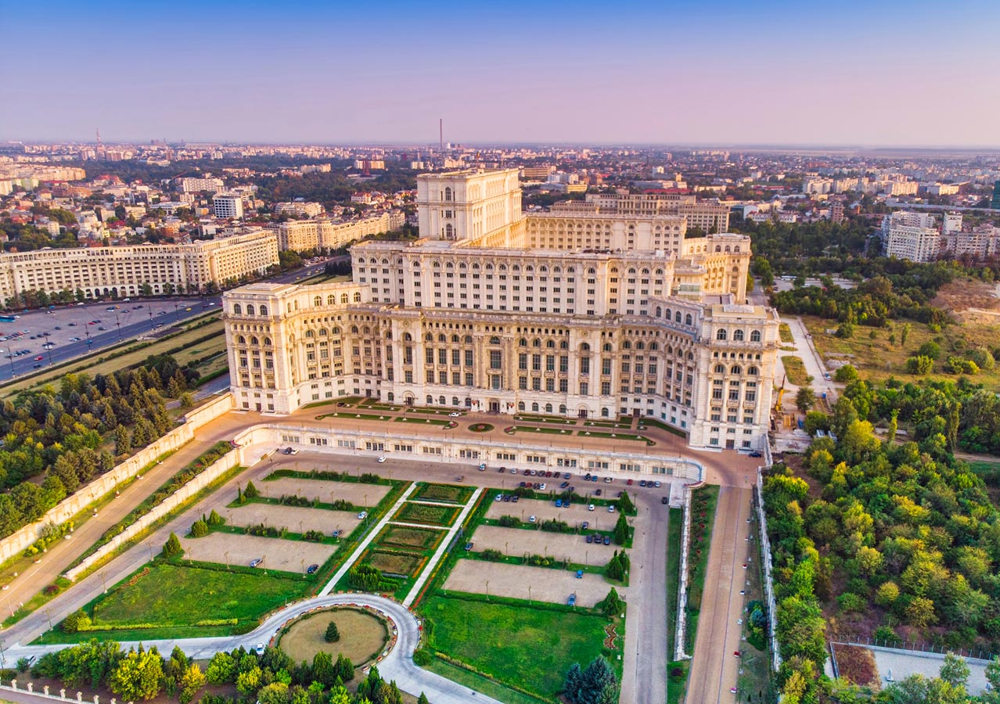

Australia's Climate Challenge
The world is heating up, and so is Australia. The gif below is an amalgamation of the Beareau of Meteorology's Mean Temperature Anomaly maps from 1911 to 2022.

We know we're a competitive bunch, and the world knows that too, especially when it comes to sport. Between 1896 and 2016, Australian's have been on the podium 1,320 times, ranking Australia 9th in the world for medal count. That's an incredible given the size of our country.
But we're not competitive when it comes to climate change. According to the Climate Change Performance Index (CCPI), Australia currently ranks 59th. In 2022 we fell 5 ranks. We're now below the United States (55th) and Russia (56th), and well below China (38th) and many other first world nations.
Australia's olympic rank
9th
Australia's climate rank
59th
My hope in writing this article is to visualise and communicate our current state of affairs when it comes to climate, and to call on the Australian spirit to be more competitive in this space.
The CCPI has specifically not awarded a top 3 (podium) place to any country in its index ranking system since 2008, reasoning that "No country is doing enough to prevent dangerous climate change." This is an incredible opportunity for Australia to step it up and be the leader in what's largely considered the world's biggest problem today.
The challenge is a big one. Over the past roughly 30 years, Australian citizens have, on average, consumed 2.8 times more energy than the global average citizen, and have contributed as much as a staggering 5 times more in greenhouse emissions.
Average Australian Energy Consumption
2.8x
Average Australian Greenhouse Emissions
5x
One positive aspect to the story is that we are closing in on the world average proportion of renewables in our energy mix, which was otherwise only half of the world's average.
Another is the uptake of small-scale renewable energy sources as a result of favourable government policies. This shows that Australians are motivated to do the right thing if financially incentivised.
Unfortunately, this isn't making much of a dent. Australia's energy is still largely produced and consumed by industry. Our total corporate emissions were a whopping 395,889,583,000 kilograms of CO2 in the year of 2021.
That's almost 100 times the weight of the world's heaviest building worth of greenhouse gasses being released into the atmosphere from Australia every year.
We must step up our game and do our part in saving the world. We can all play a part, and together earn the gold medal in climate action. Popular figures in Australia, like sporting stars, can help by raising awareness of the severity of the issue. Aussie battlers at home need to feel empowered that they can make a difference, and they can. As citizens we can all contribute by consuming less, and by consuming more sustainably. Business and governmental leaders have the biggest ability to make change. What greater achievement could you achieve than to catapult Australia to first place in your respective industry?